主要人物
小磯 健二（こいそ けんじ）
声：神木隆之介
主人公。17歳の高校2年生。数学オリンピックの日本代表候補で、論理的思考に優れているが、自己表現がやや苦手。夏希に「曾祖母の誕生日に婚約者のふりをしてほしい」と頼まれ、長野県の陣内家を訪問する。滞在中、OZに送られてきた暗号メールを解読したことで、世界規模のシステム障害の一因となってしまう。責任を自覚し、混乱収束に向けて行動する。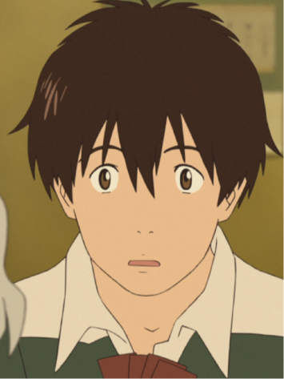
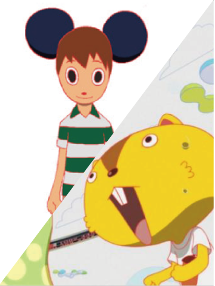
篠原 夏希（しのはら なつき）
声：桜庭ななみ
高校3年生。陣内家のひとりで、栄の曾孫にあたる。性格は社交的で行動的。健二に一緒に実家に行くという「バイト」を頼み、彼氏のふりをしてもらい、陣内家へ連れて行く。物語序盤から終盤まで、物語の展開に深く関わる中心人物。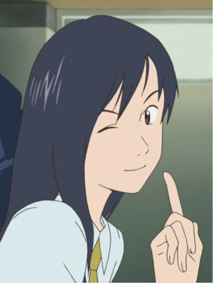
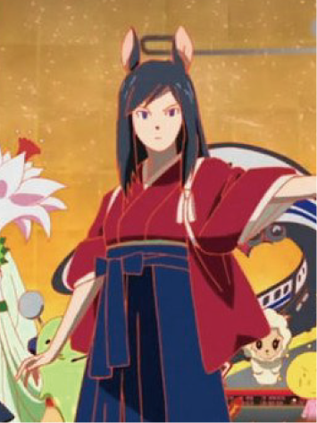
佐久間 敬（さくま たかし）
声:横川貴大
高校2年生で、健二の友人かつ数学部の同級生。OZ上で発生したアカウント乗っ取り事件の影響を最前線で検知し、健二の潔白を証明する技術的証拠を提供する。状況の分析や情報の収集に優れ、仮想空間の脅威に対して冷静な支援を行う。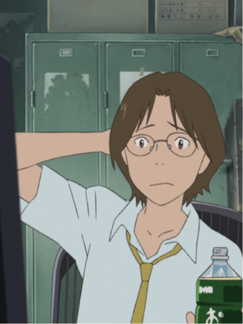
池沢 佳主馬（いけざわ かずま）
声:谷村美月
中学生で、陣内家の親戚。仮想世界OZ内の人気バトルゲームにおいて、「キング・カズマ」というアバターを使用し、世界レベルの実力を持つ。自身の技術を駆使してラブマシーンとの戦闘に参加。OZの奪還作戦における主要戦力の一人として活躍する。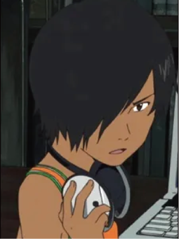
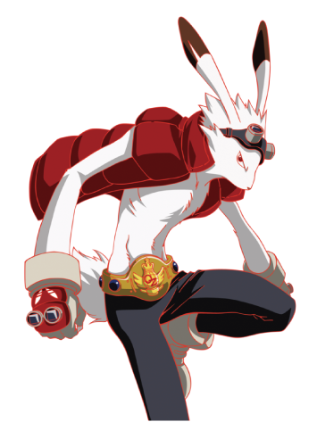
陣内 栄（じんのうち さかえ）
声:富司純子
陣内家の16代目当主。89歳。元県教育委員長であり、広い人脈と高い影響力を持つ。家族が数十人規模で集まる場においても主導的な役割を担い、OZの障害が現実世界に波及した際には、冷静な判断で家族を統率。物語全体の倫理的・精神的支柱。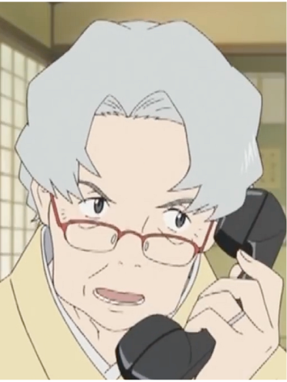
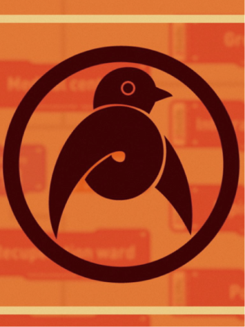
陣内 侘助（じんのうち わびすけ）
声:斎藤歩
陣内家の養子で、アメリカ帰りの研究者。OZの中核技術の開発に関わり、問題を引き起こした人工知能「ラブマシーン」の設計にも関与している。かつて家族と対立し、長年離れていたが、物語の中で帰郷。専門知識を活かして技術的対応を進めつつ、家族との関係も再構築していく。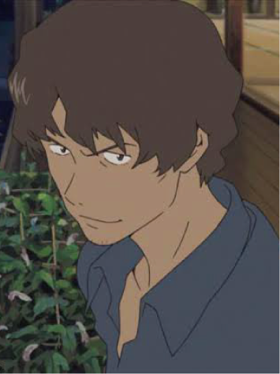
ラブマシーン
軍事目的で開発された人工知能プログラム。OZ内に侵入し、他人のアカウントを乗っ取ることで急速に成長し、仮想世界全体の制御権を掌握。その影響は現実世界のライフラインやインフラにも波及し、全地球規模の混乱を引き起こす。直接的な感情表現や言語は持たないが、高度な判断能力と行動パターンを持つ。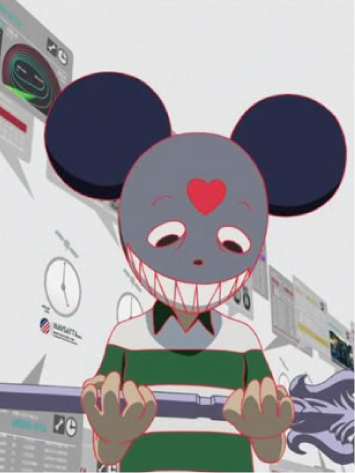
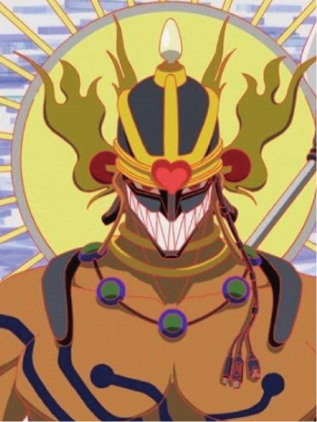